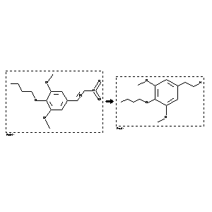

 |
| FA | RX(1); FLST(1); RX(1) |
Reaction (1 of 1)
| Reaction ID | 424439 |
| Reactant BRN | 3156855 |
| Reactant | trans-b-nitro-3.5-dimethoxy-4-butyloxy-styrene |
| Product BRN | 3314433 |
| Product | 4-butoxy-3,5-dimethoxy-phenethylamine |
| No. of Reaction Details | 1 |
Reaction Details (1 of 1)
| Reaction Classification | Preparation |
| Reagent | palladium; acetic acid; aqueous hydrochloric acid |
| Other Conditions | Hydrogenation |
| Comment | Handbook |
| Citation Pointer | 2002563; Patent; CIBA; CH 150822; 1930; |
Reference (1 of 1)
| Citation Number | 2002563 |
| Document Type | Patent |
| Patent Author | CIBA |
| Patent Number | CH 150822 |
| Patent Year | 1930 |